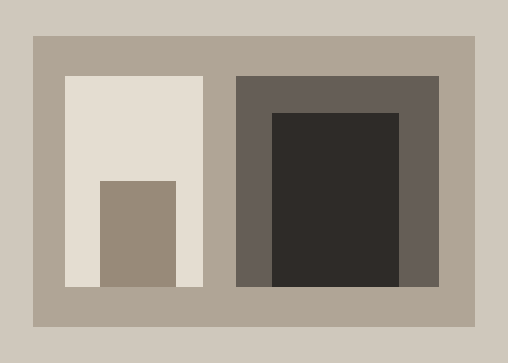

01 / Context
Listen before drawing.
Every project begins with site, climate, movement and the habits that will inhabit the space.
About the practice
Atelier Noir is a fictional independent architecture studio created as a digital portfolio case study. Its visual language explores editorial restraint, spatial rhythm and contemporary luxury.

Principles
01 / Context
Every project begins with site, climate, movement and the habits that will inhabit the space.
02 / Material
Material is not decoration; it defines atmosphere, weight, memory and the passage of time.
03 / Restraint
We pursue clarity through proportion, light and meaningful contrast rather than visual excess.